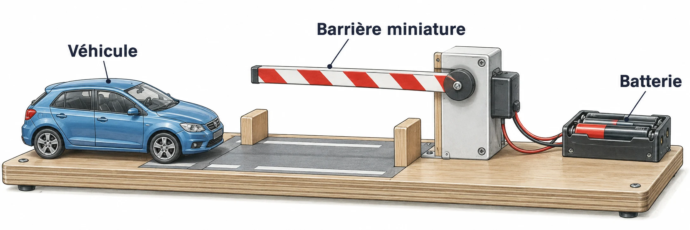

OBSERVER · EXPÉRIMENTER · EXPLIQUER
Une barrière miniature
Explore la position d’une barrière au fil du temps, avec un passage libre ou occupé.

✎ Garde ta feuille à côté de toi.Prévois sur papier → manipule → observe → rédige sur papier.
À toi de construire le programme
Construis une barrière avec un personnage, un événement bouton, une durée et une information de présence. Teste passage libre et occupé ; aucun programme terminé n’est fourni ici.
Utilise Scratch installé sur le poste, ou la version en ligne indiquée par le professeur. Aucun compte personnel nécessaire pour travailler sans partage.
Des observations pour expliquer
- Q2 : observe la situation à 3 s et à 5 s.
- Q3–Q4 : écris puis teste ta modification ; garde une trace sur papier.
Appuie ton explication sur une valeur, un changement observé ou une comparaison. Distingue ce que montre le modèle et ce qui reste à vérifier.